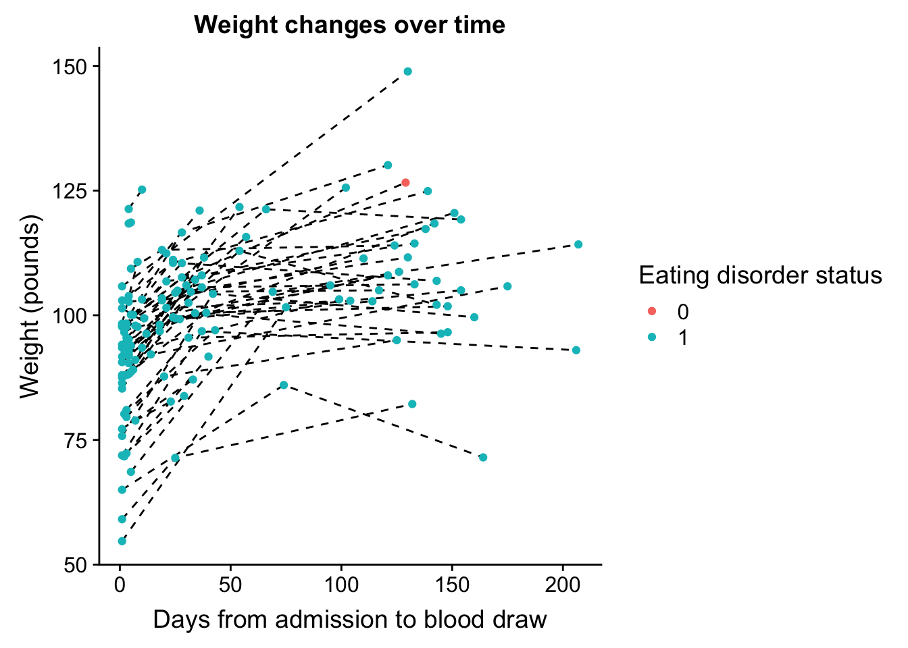
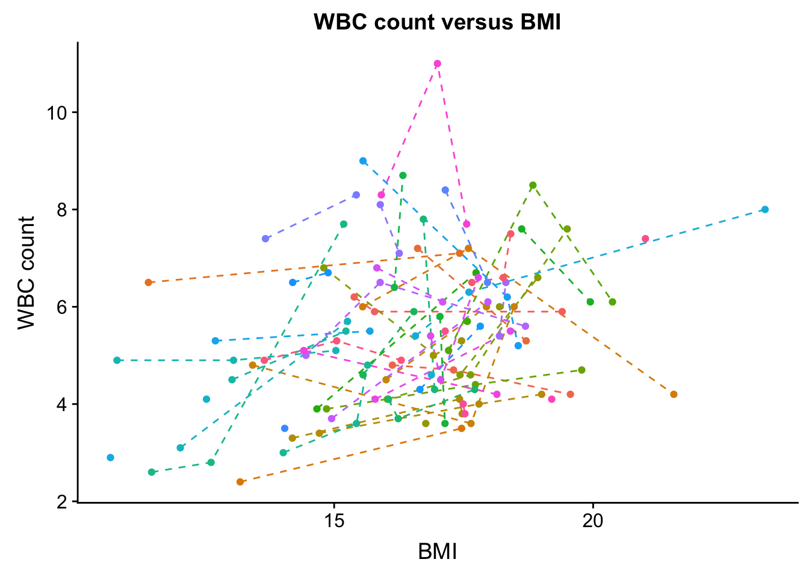

Correlations over time
Lauren Blake
2018-07-18
Last updated: 2018-08-28
workflowr checks: (Click a bullet for more information)-
✖ R Markdown file: uncommitted changes
The R Markdown is untracked by Git. To know which version of the R Markdown file created these results, you’ll want to first commit it to the Git repo. If you’re still working on the analysis, you can ignore this warning. When you’re finished, you can runwflow_publishto commit the R Markdown file and build the HTML. -
✔ Environment: empty
Great job! The global environment was empty. Objects defined in the global environment can affect the analysis in your R Markdown file in unknown ways. For reproduciblity it’s best to always run the code in an empty environment.
-
✔ Seed:
set.seed(12345)The command
set.seed(12345)was run prior to running the code in the R Markdown file. Setting a seed ensures that any results that rely on randomness, e.g. subsampling or permutations, are reproducible. -
✔ Session information: recorded
Great job! Recording the operating system, R version, and package versions is critical for reproducibility.
-
Great! You are using Git for version control. Tracking code development and connecting the code version to the results is critical for reproducibility. The version displayed above was the version of the Git repository at the time these results were generated.✔ Repository version: 241c630
Note that you need to be careful to ensure that all relevant files for the analysis have been committed to Git prior to generating the results (you can usewflow_publishorwflow_git_commit). workflowr only checks the R Markdown file, but you know if there are other scripts or data files that it depends on. Below is the status of the Git repository when the results were generated:
Note that any generated files, e.g. HTML, png, CSS, etc., are not included in this status report because it is ok for generated content to have uncommitted changes.Ignored files: Ignored: .DS_Store Ignored: analysis/.DS_Store Ignored: data/.DS_Store Ignored: data/aux_info/ Ignored: data/hg_38/ Ignored: data/libParams/ Ignored: output/.DS_Store Untracked files: Untracked: _workflowr.yml Untracked: analysis/Collection_dates.Rmd Untracked: analysis/Converting_IDs.Rmd Untracked: analysis/Global_variation.Rmd Untracked: analysis/Preliminary_clinical_covariate.Rmd Untracked: analysis/VennDiagram2018-07-24_06-55-46.log Untracked: analysis/VennDiagram2018-07-24_06-56-13.log Untracked: analysis/VennDiagram2018-07-24_06-56-50.log Untracked: analysis/VennDiagram2018-07-24_06-58-41.log Untracked: analysis/VennDiagram2018-07-24_07-00-07.log Untracked: analysis/VennDiagram2018-07-24_07-00-42.log Untracked: analysis/VennDiagram2018-07-24_07-01-08.log Untracked: analysis/VennDiagram2018-08-17_15-13-24.log Untracked: analysis/VennDiagram2018-08-17_15-13-30.log Untracked: analysis/VennDiagram2018-08-17_15-15-06.log Untracked: analysis/VennDiagram2018-08-17_15-16-01.log Untracked: analysis/VennDiagram2018-08-17_15-17-51.log Untracked: analysis/VennDiagram2018-08-17_15-18-42.log Untracked: analysis/VennDiagram2018-08-17_15-19-21.log Untracked: analysis/VennDiagram2018-08-20_09-07-57.log Untracked: analysis/VennDiagram2018-08-20_09-08-37.log Untracked: analysis/VennDiagram2018-08-26_19-54-03.log Untracked: analysis/VennDiagram2018-08-26_20-47-08.log Untracked: analysis/VennDiagram2018-08-26_20-49-49.log Untracked: analysis/VennDiagram2018-08-27_00-04-36.log Untracked: analysis/VennDiagram2018-08-27_00-09-27.log Untracked: analysis/VennDiagram2018-08-27_00-13-57.log Untracked: analysis/VennDiagram2018-08-27_00-16-32.log Untracked: analysis/VennDiagram2018-08-27_10-00-25.log Untracked: analysis/VennDiagram2018-08-28_06-03-13.log Untracked: analysis/VennDiagram2018-08-28_06-03-14.log Untracked: analysis/VennDiagram2018-08-28_06-05-50.log Untracked: analysis/VennDiagram2018-08-28_06-06-58.log Untracked: analysis/VennDiagram2018-08-28_06-10-12.log Untracked: analysis/VennDiagram2018-08-28_06-10-13.log Untracked: analysis/VennDiagram2018-08-28_06-18-29.log Untracked: analysis/VennDiagram2018-08-28_07-22-26.log Untracked: analysis/VennDiagram2018-08-28_07-22-27.log Untracked: analysis/background_dds_david.csv Untracked: analysis/correlations_bet_covariates.Rmd Untracked: analysis/correlations_over_time.Rmd Untracked: analysis/genocode_annotation_info.Rmd Untracked: analysis/genotypes.Rmd Untracked: analysis/import_transcript_level_estimates.Rmd Untracked: analysis/test_dds_david.csv Untracked: analysis/variables_by_time.Rmd Untracked: analysis/voom_limma.Rmd Untracked: analysis/voom_limma_hg37.Rmd Untracked: analysis/voom_limma_weight_change.Rmd Untracked: data/BAN2 Dates_T1_T2.xlsx Untracked: data/BAN_DATES.csv Untracked: data/BAN_DATES.xlsx Untracked: data/BAN_DATES_txt.csv Untracked: data/Ban_geno.csv Untracked: data/Ban_geno.xlsx Untracked: data/Blood_dates.txt Untracked: data/DAVID_background.txt Untracked: data/DAVID_list_T1T2.txt Untracked: data/DAVID_list_T1T2_weight.txt Untracked: data/DAVID_list_T2T3.txt Untracked: data/DAVID_list_T2T3_weight.txt Untracked: data/DAVID_results/ Untracked: data/DAVID_top100_list_T1T2.txt Untracked: data/DAVID_top100_list_T1T2_weight.txt Untracked: data/DAVID_top100_list_T2T3.txt Untracked: data/DAVID_top100_list_T2T3_weight.txt Untracked: data/Eigengenes/ Untracked: data/FemaleWeightRestoration-01-dataInput.RData Untracked: data/FemaleWeightRestoration-resid-01-dataInput.RData Untracked: data/FemaleWeightRestoration-resid-T1T2-01-dataInput.RData Untracked: data/HTSF_IDs.sav Untracked: data/Homo_sapiens.GRCh38.v22_table.txt Untracked: data/Labels.csv Untracked: data/Labels.xlsx Untracked: data/RIN.xlsx Untracked: data/RIN_over_time.csv Untracked: data/RIN_over_time.xlsx Untracked: data/T0_consolid.csv Untracked: data/T0_consolid.xlsx Untracked: data/age_t1.txt Untracked: data/birthday_age.csv Untracked: data/birthday_age.xlsx Untracked: data/clinical_sample_info.csv Untracked: data/clinical_sample_info_geno.csv Untracked: data/cmd_info.json Untracked: data/counts_hg37_gc_txsalmon.RData Untracked: data/counts_hg38_gc.RData Untracked: data/counts_hg38_gc_dds.RData Untracked: data/counts_hg38_gc_txsalmon.RData Untracked: data/covar_lm.csv Untracked: data/covar_lm_missing.csv Untracked: data/eigengenes_T1_T2_cov_adj_exp_5_modules.txt Untracked: data/eigengenes_T1_T2_module_background.txt Untracked: data/eigengenes_adj_exp_7_modules.txt Untracked: data/eigengenes_cov_adj_exp_14_modules.txt Untracked: data/eigengenes_module_background.txt Untracked: data/eigengenes_unadj_exp_10_modules.txt Untracked: data/eigengenes_unadj_exp_6_modules.txt Untracked: data/eigengenes_unadj_exp_9_modules.txt Untracked: data/files_list.txt Untracked: data/final_covariates.csv Untracked: data/gene_exp_values_2202.txt Untracked: data/gene_exp_values_2209.txt Untracked: data/gene_exp_values_2218.txt Untracked: data/gene_exp_values_2220.txt Untracked: data/gene_exp_values_2226.txt Untracked: data/gene_exp_values_2228.txt Untracked: data/gene_expression_filtered_T1T5.csv Untracked: data/gene_names_58387.txt Untracked: data/gene_to_tran.txt Untracked: data/lm_covar_fixed_random.csv Untracked: data/lm_covar_fixed_random_geno.csv Untracked: data/logs/ Untracked: data/module_T1T2_cov_adj_blue.txt Untracked: data/module_T1T2_cov_adj_brown.txt Untracked: data/module_T1T2_cov_adj_turquoise.txt Untracked: data/module_T1T2_cov_adj_yellow.txt Untracked: data/module_adj_cov_merged_blue.txt Untracked: data/module_adj_cov_merged_brown.txt Untracked: data/module_adj_cov_merged_cyan.txt Untracked: data/module_adj_cov_merged_green.txt Untracked: data/module_adj_cov_merged_greenyellow.txt Untracked: data/module_adj_cov_merged_magenta.txt Untracked: data/module_adj_cov_merged_red.txt Untracked: data/module_adj_cov_merged_salmon.txt Untracked: data/module_adj_cov_merged_tan.txt Untracked: data/module_adj_cov_merged_yellow.txt Untracked: data/module_black.txt Untracked: data/module_blue.txt Untracked: data/module_brown.txt Untracked: data/module_cov_adj_black.txt Untracked: data/module_cov_adj_blue.txt Untracked: data/module_cov_adj_brown.txt Untracked: data/module_cov_adj_cyan.txt Untracked: data/module_cov_adj_green.txt Untracked: data/module_cov_adj_greenyellow.txt Untracked: data/module_cov_adj_magenta.txt Untracked: data/module_cov_adj_pink.txt Untracked: data/module_cov_adj_purple.txt Untracked: data/module_cov_adj_red.txt Untracked: data/module_cov_adj_salmon.txt Untracked: data/module_cov_adj_tan.txt Untracked: data/module_cov_adj_turquoise.txt Untracked: data/module_cov_adj_yellow.txt Untracked: data/module_cyan.txt Untracked: data/module_green.txt Untracked: data/module_greenyellow.txt Untracked: data/module_magenta.txt Untracked: data/module_merged_black.txt Untracked: data/module_merged_blue.txt Untracked: data/module_merged_brown.txt Untracked: data/module_merged_cyan.txt Untracked: data/module_merged_green.txt Untracked: data/module_merged_greenyellow.txt Untracked: data/module_merged_magenta.txt Untracked: data/module_merged_pink.txt Untracked: data/module_merged_purple.txt Untracked: data/module_merged_red.txt Untracked: data/module_merged_salmon.txt Untracked: data/module_merged_tan.txt Untracked: data/module_merged_turquoise.txt Untracked: data/module_merged_yellow.txt Untracked: data/module_pink.txt Untracked: data/module_purple.txt Untracked: data/module_red.txt Untracked: data/module_salmon.txt Untracked: data/module_tan.txt Untracked: data/module_turquoise.txt Untracked: data/module_yellow.txt Untracked: data/notimecovariates.csv Untracked: data/only_individuals_biomarkers_weight_restoration_study.xlsx Untracked: data/pcs_genes.csv Untracked: data/pcs_genes.txt Untracked: data/rest1t2_BI_hg37.rds Untracked: data/rest1t2_BI_hg38.rds Untracked: data/rest1t2_hg37.rds Untracked: data/rest1t2_psych_meds_BMI_hg37.rds Untracked: data/rest1t2_psych_meds_hg37.rds Untracked: data/rest2t3_BI_hg37.rds Untracked: data/rest2t3_BI_hg38.rds Untracked: data/rest2t3_hg37.rds Untracked: data/rest2t3_psych_meds_BMI_hg37.rds Untracked: data/rest2t3_psych_meds_hg37.rds Untracked: data/salmon_gene_matrix_bak_reorder_time.txt Untracked: data/technical_sample_info.csv Untracked: data/tx_to_gene.txt Untracked: data/tx_to_gene_37.txt Untracked: data/usa2.pcawithref.menv.mds_cov Untracked: data/vsd_values_hg38_gc.rds Untracked: data/~$Labels.xlsx Untracked: data/~$T0_consolid.xlsx Untracked: docs/VennDiagram2018-07-24_06-55-46.log Untracked: docs/VennDiagram2018-07-24_06-56-13.log Untracked: docs/VennDiagram2018-07-24_06-56-50.log Untracked: docs/VennDiagram2018-07-24_06-58-41.log Untracked: docs/VennDiagram2018-07-24_07-00-07.log Untracked: docs/VennDiagram2018-07-24_07-00-42.log Untracked: docs/VennDiagram2018-07-24_07-01-08.log Untracked: docs/figure/ Unstaged changes: Modified: analysis/_site.yml Modified: analysis/about.Rmd Deleted: analysis/chunks.R Modified: analysis/index.Rmd Modified: analysis/license.Rmd
Introduction
The goal of this script is to look for correlations between clinical variables.
# Load library for plotting
library(cowplot)Warning: package 'cowplot' was built under R version 3.4.4Loading required package: ggplot2Warning: package 'ggplot2' was built under R version 3.4.4
Attaching package: 'cowplot'The following object is masked from 'package:ggplot2':
ggsavelibrary(ggplot2)
library(gplots)
Attaching package: 'gplots'The following object is masked from 'package:stats':
lowess# Load data
ind_only <- read.csv("/Users/laurenblake/Dropbox/Lauren Blake/RNA_seq_project/clinical_sample_info.csv")
str(ind_only)'data.frame': 156 obs. of 54 variables:
$ From_fastq : Factor w/ 156 levels "22201T1","22201T2",..: 1 2 3 4 5 6 7 8 9 10 ...
$ BAN_ID : int 2201 2201 2201 2202 2202 2202 2203 2203 2204 2204 ...
$ Time : int 1 2 3 1 2 3 1 2 1 2 ...
$ age : int 15 15 15 33 33 33 22 22 25 24 ...
$ psychmeds : int 1 1 1 0 1 1 0 0 0 0 ...
$ bmi : num 15.4 15.8 19.4 16.1 17.3 ...
$ time : int 1 2 3 1 2 3 1 2 1 2 ...
$ current_ED : int 1 1 1 1 1 1 1 1 1 1 ...
$ Time_from_admission: int 5 12 142 1 24 139 1 8 5 69 ...
$ Weight : num 93.9 96.3 118.4 103 110.5 ...
$ Change_weight : num 0 2.4 22.1 0 7.54 14.4 0 12.4 0 36.1 ...
$ WBC : num 6.2 5.9 5.9 4.8 4.7 4.2 7.2 5.3 6.5 7.1 ...
$ RBC : num 4.28 4.28 4.36 4.27 4.19 4.37 4.39 3.97 3.91 4.07 ...
$ HGB : num 13.3 13.2 13.2 13.5 13.5 13.3 14 12.7 13.7 14.6 ...
$ HCT : num 38.4 37.4 38 39.5 39.3 39.2 39.8 36.7 39.6 44.3 ...
$ MCV : int 90 87 87 93 94 90 91 93 101 109 ...
$ MCH : int 31 31 30 32 32 31 32 32 35 36 ...
$ MCHC : int 35 35 35 34 34 34 35 35 35 33 ...
$ RDW : num 13.8 13.3 12.5 12.9 13.2 12.7 13.1 13.4 13.5 12.8 ...
$ MPV : num 7.7 8.3 8.8 7.4 6.5 9.4 7.7 7.9 6.8 6.9 ...
$ Platelet : int 197 226 258 272 270 266 233 211 229 267 ...
$ AN : num 3.6 3.3 3.9 3.2 2.7 2.1 3.9 2.2 4.6 4.6 ...
$ AM : num 0.4 0.3 0.4 0.3 0.3 0.3 0.2 0.2 0.4 0.5 ...
$ AE : num 0.1 0.2 0.1 0.1 0.1 0.1 0.1 0.1 0 0.5 ...
$ AB : num 0 0 0 0.1 0 0 0.1 0.1 0 0.1 ...
$ LUC : int 2 2 2 2 3 2 2 5 1 2 ...
$ NA. : int 139 144 142 137 140 137 137 142 142 143 ...
$ K : num 4.1 4.6 4.6 4.6 4.1 4.1 3.9 4.2 3.2 4.8 ...
$ CL : int 102 102 105 99 101 99 NA 103 104 102 ...
$ BUN : int 12 15 11 15 16 14 16 12 27 25 ...
$ CR : num 0.63 0.7 0.65 0.72 0.72 0.74 0.85 0.81 0.71 0.56 ...
$ Anion : int 9 15 11 7 10 12 NA 8 7 13 ...
$ BUN.1 : num 19 21 17 21 22 19 19 15 38 45 ...
$ GLU : int 80 84 83 69 79 76 76 75 49 76 ...
$ CA : num 9.8 9.7 9.9 9.5 9.3 9 8.9 8.8 8.6 9.6 ...
$ MG : num 1.8 1.9 1.8 2.1 2 1.9 2.1 2.1 2.2 2 ...
$ PHOS : num 4.7 5 4.3 4.6 4.8 4.4 4.4 4.4 1.8 4.9 ...
$ TP : num 8.1 8.2 7.6 6.2 6.9 7.2 6.6 5.8 6.8 7.1 ...
$ ALB : num NA NA 4.5 NA 3.7 3.9 3.8 3.1 3.8 4.5 ...
$ URAC : num 3.1 4.3 3.6 3.1 3.4 2.9 5.7 3 4.3 3.9 ...
$ LD : int 377 388 433 333 402 425 335 298 632 847 ...
$ AST : int NA 23 19 28 24 26 27 27 124 43 ...
$ ALT : int NA 37 22 36 36 25 58 57 337 90 ...
$ ALP : int NA 72 83 22 27 33 31 28 55 79 ...
$ CK : Factor w/ 66 levels "","<20.0","101",..: 52 54 59 21 33 65 19 17 30 21 ...
$ PT : num 11.6 10.9 11.4 11.6 10.1 10.9 11.4 10.7 12.9 10.5 ...
$ ESR : int NA NA 5 NA 5 5 NA 5 1 1 ...
$ Height : num 65.5 65.5 65.5 67 NA NA 64.5 NA 65 NA ...
$ Race : int 2 2 2 2 2 2 2 2 2 2 ...
$ Ethnicity : int 2 2 2 2 2 2 2 2 2 2 ...
$ AL : num 1.9 2 1.4 1 1.5 1.6 2.7 2.5 1.4 1.2 ...
$ CO2 : Factor w/ 16 levels "",">40","19",..: 10 9 8 13 11 8 11 13 13 10 ...
$ MDRD : Factor w/ 8 levels "",">=60",">60",..: 8 7 8 2 2 2 2 2 2 2 ...
$ bilirubin : Factor w/ 17 levels "","<0.1","0",..: 7 7 9 9 7 7 13 7 12 6 ...dim(ind_only)[1] 156 54summary(ind_only) From_fastq BAN_ID Time age
22201T1: 1 Min. :2201 Min. :1.000 Min. :15.00
22201T2: 1 1st Qu.:2216 1st Qu.:1.000 1st Qu.:20.00
22201T3: 1 Median :2233 Median :2.000 Median :24.00
22202T1: 1 Mean :2235 Mean :2.058 Mean :26.16
22202T2: 1 3rd Qu.:2254 3rd Qu.:3.000 3rd Qu.:33.00
22202T3: 1 Max. :2274 Max. :5.000 Max. :52.00
(Other):150 NA's :7
psychmeds bmi time current_ED
Min. :0.0000 Min. :10.68 Min. :1.000 Min. :0.0000
1st Qu.:0.0000 1st Qu.:15.56 1st Qu.:1.000 1st Qu.:1.0000
Median :1.0000 Median :16.97 Median :2.000 Median :1.0000
Mean :0.6667 Mean :16.73 Mean :2.058 Mean :0.9551
3rd Qu.:1.0000 3rd Qu.:17.98 3rd Qu.:3.000 3rd Qu.:1.0000
Max. :1.0000 Max. :23.32 Max. :5.000 Max. :1.0000
Time_from_admission Weight Change_weight WBC
Min. : 1.00 Min. : 54.70 Min. :-14.500 Min. : 2.400
1st Qu.: 4.00 1st Qu.: 92.95 1st Qu.: 0.000 1st Qu.: 4.200
Median : 24.50 Median :100.73 Median : 0.900 Median : 5.300
Mean : 94.65 Mean :100.67 Mean : 5.714 Mean : 5.468
3rd Qu.:118.00 3rd Qu.:109.19 3rd Qu.: 10.180 3rd Qu.: 6.500
Max. :947.00 Max. :148.90 Max. : 46.900 Max. :11.000
NA's :33
RBC HGB HCT MCV
Min. :2.810 Min. : 9.20 Min. :27.90 Min. : 70.00
1st Qu.:3.865 1st Qu.:11.70 1st Qu.:35.85 1st Qu.: 89.00
Median :4.190 Median :12.70 Median :38.10 Median : 91.00
Mean :4.149 Mean :12.63 Mean :37.86 Mean : 91.68
3rd Qu.:4.430 3rd Qu.:13.70 3rd Qu.:40.75 3rd Qu.: 95.00
Max. :5.450 Max. :16.00 Max. :46.10 Max. :109.00
NA's :33 NA's :33 NA's :33 NA's :33
MCH MCHC RDW MPV
Min. :22.00 Min. :30.00 Min. :11.90 Min. : 6.300
1st Qu.:30.00 1st Qu.:33.00 1st Qu.:12.80 1st Qu.: 7.400
Median :31.00 Median :33.00 Median :13.40 Median : 7.800
Mean :30.63 Mean :33.35 Mean :13.67 Mean : 8.042
3rd Qu.:32.00 3rd Qu.:34.00 3rd Qu.:14.25 3rd Qu.: 8.600
Max. :36.00 Max. :36.00 Max. :18.40 Max. :10.800
NA's :33 NA's :33 NA's :33 NA's :33
Platelet AN AM AE
Min. :128.0 Min. :0.800 Min. :0.1000 Min. :0.0000
1st Qu.:195.0 1st Qu.:2.100 1st Qu.:0.2000 1st Qu.:0.1000
Median :238.0 Median :2.800 Median :0.3000 Median :0.1000
Mean :253.0 Mean :3.007 Mean :0.3287 Mean :0.1744
3rd Qu.:298.5 3rd Qu.:3.600 3rd Qu.:0.4000 3rd Qu.:0.2000
Max. :527.0 Max. :7.800 Max. :0.7000 Max. :2.9000
NA's :33 NA's :34 NA's :34 NA's :35
AB LUC NA. K
Min. :0.00000 Min. :1.000 Min. :134.0 Min. :3.100
1st Qu.:0.00000 1st Qu.:2.000 1st Qu.:138.0 1st Qu.:4.100
Median :0.00000 Median :3.000 Median :140.0 Median :4.300
Mean :0.02314 Mean :2.628 Mean :139.8 Mean :4.336
3rd Qu.:0.00000 3rd Qu.:3.000 3rd Qu.:142.0 3rd Qu.:4.600
Max. :0.10000 Max. :6.000 Max. :147.0 Max. :6.100
NA's :35 NA's :35 NA's :22 NA's :22
CL BUN CR Anion
Min. : 84.0 Min. : 4.00 Min. :0.4400 Min. : 4.000
1st Qu.:100.2 1st Qu.:12.00 1st Qu.:0.6200 1st Qu.: 8.000
Median :102.0 Median :15.00 Median :0.7000 Median :10.000
Mean :102.1 Mean :15.22 Mean :0.7201 Mean : 9.913
3rd Qu.:104.0 3rd Qu.:19.00 3rd Qu.:0.8100 3rd Qu.:12.000
Max. :113.0 Max. :36.00 Max. :1.1500 Max. :20.000
NA's :26 NA's :23 NA's :23 NA's :29
BUN.1 GLU CA MG
Min. : 5.00 Min. :49.00 Min. : 8.300 Min. :1.400
1st Qu.:16.00 1st Qu.:76.00 1st Qu.: 9.125 1st Qu.:1.875
Median :21.00 Median :81.00 Median : 9.400 Median :1.950
Mean :22.07 Mean :80.19 Mean : 9.416 Mean :1.955
3rd Qu.:26.00 3rd Qu.:85.00 3rd Qu.: 9.700 3rd Qu.:2.100
Max. :82.00 Max. :98.00 Max. :10.400 Max. :2.700
NA's :24 NA's :25 NA's :22 NA's :24
PHOS TP ALB URAC
Min. :1.800 Min. :4.800 Min. :2.10 Min. :1.200
1st Qu.:4.000 1st Qu.:6.300 1st Qu.:3.80 1st Qu.:2.875
Median :4.300 Median :6.900 Median :4.10 Median :3.400
Mean :4.327 Mean :6.895 Mean :4.09 Mean :3.428
3rd Qu.:4.700 3rd Qu.:7.400 3rd Qu.:4.50 3rd Qu.:3.900
Max. :6.200 Max. :9.400 Max. :5.60 Max. :8.900
NA's :25 NA's :28 NA's :31 NA's :24
LD AST ALT ALP
Min. : 250.0 Min. : 13.00 Min. : 12.00 Min. : 22.00
1st Qu.: 371.2 1st Qu.: 22.00 1st Qu.: 23.00 1st Qu.: 43.00
Median : 425.5 Median : 27.00 Median : 33.00 Median : 58.00
Mean : 452.5 Mean : 37.82 Mean : 54.07 Mean : 59.02
3rd Qu.: 500.0 3rd Qu.: 38.50 3rd Qu.: 51.00 3rd Qu.: 68.00
Max. :1504.0 Max. :152.00 Max. :338.00 Max. :166.00
NA's :26 NA's :25 NA's :25 NA's :27
CK PT ESR Height
: 28 Min. : 9.20 Min. : 1.000 Min. :60.00
34 : 6 1st Qu.:10.50 1st Qu.: 4.000 1st Qu.:63.00
41 : 6 Median :11.20 Median : 6.000 Median :64.45
23 : 4 Mean :11.19 Mean : 7.975 Mean :64.90
28 : 4 3rd Qu.:11.80 3rd Qu.:10.000 3rd Qu.:65.98
29 : 4 Max. :14.30 Max. :49.000 Max. :72.00
(Other):104 NA's :26 NA's :35 NA's :72
Race Ethnicity AL CO2 MDRD
Min. :2.000 Min. :1.000 Min. :0.600 :22 >=60 :97
1st Qu.:2.000 1st Qu.:2.000 1st Qu.:1.400 28 :22 :34
Median :2.000 Median :2.000 Median :1.750 27 :19 >60 :11
Mean :2.115 Mean :1.962 Mean :1.796 26 :17 N/A : 9
3rd Qu.:2.000 3rd Qu.:2.000 3rd Qu.:2.200 29 :17 57 : 2
Max. :5.000 Max. :2.000 Max. :3.400 31 :14 53.34 : 1
NA's :34 (Other):45 (Other): 2
bilirubin
0.4 :32
:28
0.3 :24
0.5 :20
0.6 :16
0.2 :14
(Other):22 Weight over time
weight_over_time <- ggplot(ind_only[1:144,], aes(as.factor(ind_only$time[1:144]), ind_only$Weight[1:144], group = ind_only$BAN_ID[1:144])) + geom_line(linetype = "dashed", aes(color = as.factor(ind_only$BAN_ID[1:144]))) + geom_point(aes(color = as.factor(ind_only$BAN_ID[1:144]))) + theme(legend.position="none") + xlab("Time") + ylab("Weight (pounds)") + ggtitle("Weight changes over time")
plot_grid(weight_over_time)#save_plot("/Users/laurenblake/Dropbox/Lauren Blake/Figures/weight_over_time.png", weight_over_time,
# base_aspect_ratio = 1)Weight over time (boxplot)
weight_over_time <- ggplot(ind_only, aes(as.factor(ind_only$Time), ind_only$Weight)) + geom_boxplot(aes(color = as.factor(ind_only$Time)), outlier.shape = NA) + geom_jitter(aes(as.factor(ind_only$Time), ind_only$Weight), size = 0.5, width = 0.1) + theme(legend.position="none") + xlab("Timepoint") + ylab("Weight (lbs)")
plot_grid(weight_over_time)
#save_plot("/Users/laurenblake/Dropbox/Lauren Blake/Figures/Weight_over_time_boxplot.png", weight_over_time,
# base_aspect_ratio = 1)BMI over time (boxplot)
weight_over_time <- ggplot(ind_only, aes(as.factor(ind_only$Time), ind_only$bmi)) + geom_boxplot(aes(color = as.factor(ind_only$Time)), outlier.shape = NA) + geom_jitter(aes(as.factor(ind_only$Time), ind_only$bmi), size = 0.5, width = 0.1) + theme(legend.position="none") + xlab("Timepoint") + ylab("BMI")
plot_grid(weight_over_time)#save_plot("/Users/laurenblake/Dropbox/Lauren Blake/Figures/BMI_over_time_boxplot.png", weight_over_time,
# base_aspect_ratio = 1)Weight over days (rather than T1, T2, etc.)
weight_over_time <- ggplot(ind_only[1:144,], aes(ind_only$Time_from_admission[1:144], ind_only$Weight[1:144], group = ind_only$BAN_ID[1:144])) + geom_line(linetype = "dashed", aes(color = as.factor(ind_only$BAN_ID[1:144]))) + geom_point(aes(color = as.factor(ind_only$BAN_ID[1:144]))) + theme(legend.position="none") + xlab("Days from admission to blood draw") + ylab("Weight (pounds)") + ggtitle("Weight changes over time")
plot_grid(weight_over_time)#save_plot("/Users/laurenblake/Dropbox/Lauren Blake/Figures/weight_over_time_normalized.png", weight_over_time,
# base_aspect_ratio = 1)Weight over days (rather than T1, T2, etc.)
weight_over_time <- ggplot(ind_only[1:144,], aes(ind_only$Time_from_admission[1:144], ind_only$Weight[1:144], group = ind_only$BAN_ID[1:144])) + geom_line(linetype = "dashed") + geom_point(aes(color = as.factor(ind_only$current_ED[1:144]))) + xlab("Days from admission to blood draw") + ylab("Weight (pounds)") + ggtitle("Weight changes over time") + labs(color='Eating disorder status')
plot_grid(weight_over_time)
#save_plot("/Users/laurenblake/Dropbox/Lauren Blake/Figures/weight_over_time_by_recovery_status.png", weight_over_time,
# base_aspect_ratio = 1)Look at all correlations for numeric variables
# Eliminate factors
check_cor <- ind_only[,-1]
check_cor <- check_cor[,1:(ncol(check_cor)-6)]
# Obtain correlations and pvalues
pvalues <- matrix(data = NA, nrow = ncol(check_cor), ncol = ncol(check_cor))
colnames(pvalues) <- colnames(check_cor)
rownames(pvalues) <- colnames(check_cor)
correlations <- matrix(data = NA, nrow = ncol(check_cor), ncol = ncol(check_cor))
colnames(correlations) <- colnames(check_cor)
rownames(correlations) <- colnames(check_cor)
j=1
for (j in 1:ncol(check_cor)){
for (i in 1:ncol(check_cor)){
test <- cor.test(as.numeric(check_cor[,j]), as.numeric(check_cor[,i]), method = "pearson")
#Get the correlation
test$estimate
#Get the p-value
test$p.value
pvalues[j, i] <- test$p.value
correlations[j, i] <- test$estimate
i = i+1
}
j=j+1
}Warning in cor(x, y): the standard deviation is zero
Warning in cor(x, y): the standard deviation is zero#correlations
#pvalues
#Find which variables are p-value < 0.05
pvalues <=0.05 BAN_ID Time age psychmeds bmi time current_ED
BAN_ID TRUE TRUE FALSE FALSE FALSE TRUE TRUE
Time TRUE TRUE TRUE TRUE TRUE TRUE TRUE
age FALSE TRUE TRUE TRUE TRUE TRUE TRUE
psychmeds FALSE TRUE TRUE TRUE TRUE TRUE FALSE
bmi FALSE TRUE TRUE TRUE TRUE TRUE TRUE
time TRUE TRUE TRUE TRUE TRUE TRUE TRUE
current_ED TRUE TRUE TRUE FALSE TRUE TRUE TRUE
Time_from_admission TRUE TRUE TRUE FALSE TRUE TRUE TRUE
Weight FALSE TRUE TRUE TRUE TRUE TRUE TRUE
Change_weight FALSE FALSE FALSE FALSE TRUE FALSE FALSE
WBC TRUE FALSE FALSE FALSE TRUE FALSE FALSE
RBC TRUE FALSE TRUE FALSE FALSE FALSE FALSE
HGB FALSE FALSE TRUE FALSE TRUE FALSE FALSE
HCT FALSE FALSE TRUE FALSE TRUE FALSE FALSE
MCV FALSE FALSE FALSE FALSE FALSE FALSE FALSE
MCH TRUE FALSE FALSE FALSE FALSE FALSE FALSE
MCHC TRUE TRUE FALSE FALSE FALSE TRUE TRUE
RDW FALSE FALSE FALSE FALSE FALSE FALSE FALSE
MPV FALSE FALSE FALSE TRUE FALSE FALSE FALSE
Platelet FALSE FALSE TRUE FALSE FALSE FALSE FALSE
AN TRUE FALSE FALSE FALSE TRUE FALSE FALSE
AM FALSE FALSE FALSE FALSE FALSE FALSE FALSE
AE FALSE FALSE FALSE FALSE FALSE FALSE FALSE
AB FALSE FALSE FALSE TRUE FALSE FALSE FALSE
LUC FALSE FALSE FALSE FALSE FALSE FALSE FALSE
NA. TRUE FALSE TRUE FALSE FALSE FALSE FALSE
K FALSE FALSE FALSE FALSE TRUE FALSE FALSE
CL FALSE FALSE FALSE FALSE FALSE FALSE FALSE
BUN FALSE FALSE FALSE FALSE FALSE FALSE FALSE
CR TRUE FALSE FALSE TRUE FALSE FALSE FALSE
Anion TRUE FALSE TRUE FALSE TRUE FALSE FALSE
BUN.1 FALSE FALSE FALSE TRUE FALSE FALSE FALSE
GLU FALSE FALSE FALSE FALSE TRUE FALSE FALSE
CA TRUE FALSE TRUE FALSE FALSE FALSE FALSE
MG FALSE FALSE TRUE FALSE FALSE FALSE FALSE
PHOS FALSE FALSE FALSE FALSE FALSE FALSE FALSE
TP TRUE TRUE TRUE FALSE TRUE TRUE FALSE
ALB FALSE TRUE TRUE FALSE TRUE TRUE FALSE
URAC FALSE FALSE FALSE FALSE FALSE FALSE FALSE
LD FALSE FALSE FALSE FALSE FALSE FALSE FALSE
AST FALSE FALSE FALSE FALSE FALSE FALSE FALSE
ALT FALSE FALSE FALSE FALSE FALSE FALSE FALSE
ALP FALSE FALSE FALSE FALSE FALSE FALSE FALSE
CK FALSE TRUE FALSE FALSE FALSE TRUE TRUE
PT FALSE TRUE FALSE FALSE TRUE TRUE FALSE
ESR FALSE FALSE TRUE FALSE FALSE FALSE FALSE
Height FALSE FALSE FALSE FALSE FALSE FALSE NA
Time_from_admission Weight Change_weight WBC RBC
BAN_ID TRUE FALSE FALSE TRUE TRUE
Time TRUE TRUE FALSE FALSE FALSE
age TRUE TRUE FALSE FALSE TRUE
psychmeds FALSE TRUE FALSE FALSE FALSE
bmi TRUE TRUE TRUE TRUE FALSE
time TRUE TRUE FALSE FALSE FALSE
current_ED TRUE TRUE FALSE FALSE FALSE
Time_from_admission TRUE TRUE FALSE FALSE TRUE
Weight TRUE TRUE TRUE TRUE TRUE
Change_weight FALSE TRUE TRUE TRUE FALSE
WBC FALSE TRUE TRUE TRUE TRUE
RBC TRUE TRUE FALSE TRUE TRUE
HGB FALSE TRUE FALSE TRUE TRUE
HCT TRUE TRUE FALSE TRUE TRUE
MCV FALSE FALSE FALSE TRUE TRUE
MCH FALSE FALSE FALSE FALSE TRUE
MCHC FALSE FALSE TRUE FALSE FALSE
RDW FALSE FALSE FALSE TRUE FALSE
MPV FALSE FALSE FALSE TRUE FALSE
Platelet FALSE FALSE FALSE FALSE TRUE
AN FALSE TRUE TRUE TRUE FALSE
AM FALSE FALSE TRUE TRUE FALSE
AE FALSE FALSE TRUE TRUE FALSE
AB FALSE FALSE FALSE TRUE TRUE
LUC FALSE FALSE FALSE TRUE TRUE
NA. FALSE FALSE FALSE FALSE FALSE
K FALSE TRUE FALSE FALSE FALSE
CL FALSE FALSE FALSE FALSE TRUE
BUN FALSE FALSE TRUE TRUE TRUE
CR FALSE FALSE TRUE FALSE TRUE
Anion FALSE TRUE FALSE FALSE TRUE
BUN.1 FALSE FALSE TRUE TRUE TRUE
GLU FALSE TRUE TRUE FALSE FALSE
CA FALSE FALSE FALSE FALSE TRUE
MG FALSE TRUE FALSE FALSE FALSE
PHOS FALSE FALSE TRUE FALSE FALSE
TP TRUE TRUE FALSE FALSE TRUE
ALB TRUE TRUE FALSE FALSE TRUE
URAC FALSE FALSE FALSE FALSE TRUE
LD FALSE FALSE TRUE FALSE FALSE
AST FALSE FALSE FALSE FALSE FALSE
ALT FALSE FALSE TRUE FALSE FALSE
ALP TRUE FALSE TRUE FALSE FALSE
CK TRUE FALSE FALSE FALSE FALSE
PT FALSE TRUE TRUE FALSE FALSE
ESR FALSE FALSE FALSE FALSE TRUE
Height FALSE TRUE FALSE FALSE FALSE
HGB HCT MCV MCH MCHC RDW MPV Platelet
BAN_ID FALSE FALSE FALSE TRUE TRUE FALSE FALSE FALSE
Time FALSE FALSE FALSE FALSE TRUE FALSE FALSE FALSE
age TRUE TRUE FALSE FALSE FALSE FALSE FALSE TRUE
psychmeds FALSE FALSE FALSE FALSE FALSE FALSE TRUE FALSE
bmi TRUE TRUE FALSE FALSE FALSE FALSE FALSE FALSE
time FALSE FALSE FALSE FALSE TRUE FALSE FALSE FALSE
current_ED FALSE FALSE FALSE FALSE TRUE FALSE FALSE FALSE
Time_from_admission FALSE TRUE FALSE FALSE FALSE FALSE FALSE FALSE
Weight TRUE TRUE FALSE FALSE FALSE FALSE FALSE FALSE
Change_weight FALSE FALSE FALSE FALSE TRUE FALSE FALSE FALSE
WBC TRUE TRUE TRUE FALSE FALSE TRUE TRUE FALSE
RBC TRUE TRUE TRUE TRUE FALSE FALSE FALSE TRUE
HGB TRUE TRUE FALSE TRUE TRUE TRUE FALSE TRUE
HCT TRUE TRUE FALSE TRUE TRUE TRUE FALSE TRUE
MCV FALSE FALSE TRUE TRUE FALSE TRUE FALSE FALSE
MCH TRUE TRUE TRUE TRUE TRUE TRUE FALSE FALSE
MCHC TRUE TRUE FALSE TRUE TRUE TRUE FALSE TRUE
RDW TRUE TRUE TRUE TRUE TRUE TRUE FALSE FALSE
MPV FALSE FALSE FALSE FALSE FALSE FALSE TRUE TRUE
Platelet TRUE TRUE FALSE FALSE TRUE FALSE TRUE TRUE
AN TRUE TRUE TRUE FALSE FALSE FALSE FALSE FALSE
AM FALSE FALSE FALSE FALSE TRUE FALSE FALSE FALSE
AE FALSE FALSE FALSE FALSE FALSE FALSE FALSE TRUE
AB TRUE TRUE FALSE FALSE FALSE FALSE FALSE FALSE
LUC TRUE TRUE FALSE FALSE FALSE TRUE FALSE FALSE
NA. FALSE FALSE FALSE FALSE FALSE FALSE FALSE FALSE
K FALSE FALSE FALSE FALSE FALSE FALSE FALSE FALSE
CL TRUE TRUE TRUE FALSE FALSE FALSE FALSE FALSE
BUN FALSE FALSE TRUE TRUE FALSE FALSE FALSE FALSE
CR FALSE FALSE TRUE FALSE TRUE TRUE FALSE FALSE
Anion TRUE TRUE FALSE FALSE FALSE FALSE FALSE FALSE
BUN.1 TRUE TRUE TRUE TRUE TRUE FALSE FALSE FALSE
GLU FALSE FALSE FALSE FALSE FALSE FALSE FALSE FALSE
CA TRUE TRUE FALSE FALSE FALSE FALSE FALSE FALSE
MG FALSE FALSE FALSE FALSE FALSE FALSE FALSE FALSE
PHOS FALSE FALSE FALSE FALSE TRUE FALSE FALSE FALSE
TP TRUE TRUE FALSE FALSE FALSE FALSE FALSE FALSE
ALB TRUE TRUE FALSE FALSE FALSE FALSE FALSE FALSE
URAC TRUE TRUE FALSE FALSE TRUE FALSE FALSE FALSE
LD FALSE FALSE FALSE FALSE TRUE FALSE FALSE FALSE
AST FALSE FALSE FALSE FALSE FALSE FALSE FALSE TRUE
ALT FALSE FALSE FALSE FALSE FALSE FALSE FALSE TRUE
ALP FALSE FALSE FALSE FALSE TRUE TRUE FALSE TRUE
CK FALSE FALSE FALSE FALSE FALSE FALSE FALSE FALSE
PT FALSE FALSE FALSE FALSE FALSE FALSE FALSE FALSE
ESR TRUE TRUE TRUE FALSE FALSE FALSE FALSE TRUE
Height FALSE FALSE FALSE FALSE FALSE FALSE FALSE TRUE
AN AM AE AB LUC NA. K CL BUN
BAN_ID TRUE FALSE FALSE FALSE FALSE TRUE FALSE FALSE FALSE
Time FALSE FALSE FALSE FALSE FALSE FALSE FALSE FALSE FALSE
age FALSE FALSE FALSE FALSE FALSE TRUE FALSE FALSE FALSE
psychmeds FALSE FALSE FALSE TRUE FALSE FALSE FALSE FALSE FALSE
bmi TRUE FALSE FALSE FALSE FALSE FALSE TRUE FALSE FALSE
time FALSE FALSE FALSE FALSE FALSE FALSE FALSE FALSE FALSE
current_ED FALSE FALSE FALSE FALSE FALSE FALSE FALSE FALSE FALSE
Time_from_admission FALSE FALSE FALSE FALSE FALSE FALSE FALSE FALSE FALSE
Weight TRUE FALSE FALSE FALSE FALSE FALSE TRUE FALSE FALSE
Change_weight TRUE TRUE TRUE FALSE FALSE FALSE FALSE FALSE TRUE
WBC TRUE TRUE TRUE TRUE TRUE FALSE FALSE FALSE TRUE
RBC FALSE FALSE FALSE TRUE TRUE FALSE FALSE TRUE TRUE
HGB TRUE FALSE FALSE TRUE TRUE FALSE FALSE TRUE FALSE
HCT TRUE FALSE FALSE TRUE TRUE FALSE FALSE TRUE FALSE
MCV TRUE FALSE FALSE FALSE FALSE FALSE FALSE TRUE TRUE
MCH FALSE FALSE FALSE FALSE FALSE FALSE FALSE FALSE TRUE
MCHC FALSE TRUE FALSE FALSE FALSE FALSE FALSE FALSE FALSE
RDW FALSE FALSE FALSE FALSE TRUE FALSE FALSE FALSE FALSE
MPV FALSE FALSE FALSE FALSE FALSE FALSE FALSE FALSE FALSE
Platelet FALSE FALSE TRUE FALSE FALSE FALSE FALSE FALSE FALSE
AN TRUE TRUE FALSE TRUE TRUE FALSE FALSE FALSE TRUE
AM TRUE TRUE TRUE TRUE FALSE FALSE FALSE FALSE FALSE
AE FALSE TRUE TRUE FALSE FALSE FALSE FALSE FALSE FALSE
AB TRUE TRUE FALSE TRUE FALSE FALSE FALSE FALSE FALSE
LUC TRUE FALSE FALSE FALSE TRUE FALSE FALSE FALSE FALSE
NA. FALSE FALSE FALSE FALSE FALSE TRUE FALSE TRUE FALSE
K FALSE FALSE FALSE FALSE FALSE FALSE TRUE FALSE FALSE
CL FALSE FALSE FALSE FALSE FALSE TRUE FALSE TRUE FALSE
BUN TRUE FALSE FALSE FALSE FALSE FALSE FALSE FALSE TRUE
CR FALSE TRUE FALSE FALSE FALSE TRUE FALSE FALSE FALSE
Anion FALSE FALSE FALSE FALSE FALSE TRUE FALSE TRUE FALSE
BUN.1 TRUE TRUE FALSE FALSE FALSE FALSE FALSE FALSE TRUE
GLU FALSE FALSE FALSE FALSE FALSE FALSE FALSE FALSE FALSE
CA FALSE FALSE FALSE FALSE FALSE TRUE TRUE TRUE FALSE
MG FALSE FALSE FALSE FALSE FALSE FALSE FALSE FALSE FALSE
PHOS FALSE TRUE FALSE FALSE TRUE FALSE TRUE FALSE FALSE
TP FALSE FALSE FALSE FALSE FALSE TRUE FALSE TRUE FALSE
ALB FALSE FALSE FALSE FALSE FALSE TRUE FALSE TRUE FALSE
URAC FALSE FALSE FALSE FALSE FALSE FALSE FALSE TRUE FALSE
LD FALSE FALSE FALSE FALSE FALSE FALSE FALSE FALSE TRUE
AST FALSE FALSE FALSE FALSE FALSE FALSE FALSE TRUE FALSE
ALT FALSE FALSE FALSE FALSE FALSE FALSE FALSE FALSE TRUE
ALP FALSE FALSE FALSE FALSE FALSE FALSE FALSE FALSE FALSE
CK FALSE FALSE FALSE FALSE FALSE FALSE FALSE FALSE FALSE
PT FALSE FALSE FALSE FALSE FALSE FALSE FALSE FALSE TRUE
ESR FALSE FALSE FALSE FALSE TRUE TRUE FALSE FALSE FALSE
Height FALSE FALSE TRUE FALSE FALSE FALSE FALSE FALSE FALSE
CR Anion BUN.1 GLU CA MG PHOS TP ALB
BAN_ID TRUE TRUE FALSE FALSE TRUE FALSE FALSE TRUE FALSE
Time FALSE FALSE FALSE FALSE FALSE FALSE FALSE TRUE TRUE
age FALSE TRUE FALSE FALSE TRUE TRUE FALSE TRUE TRUE
psychmeds TRUE FALSE TRUE FALSE FALSE FALSE FALSE FALSE FALSE
bmi FALSE TRUE FALSE TRUE FALSE FALSE FALSE TRUE TRUE
time FALSE FALSE FALSE FALSE FALSE FALSE FALSE TRUE TRUE
current_ED FALSE FALSE FALSE FALSE FALSE FALSE FALSE FALSE FALSE
Time_from_admission FALSE FALSE FALSE FALSE FALSE FALSE FALSE TRUE TRUE
Weight FALSE TRUE FALSE TRUE FALSE TRUE FALSE TRUE TRUE
Change_weight TRUE FALSE TRUE TRUE FALSE FALSE TRUE FALSE FALSE
WBC FALSE FALSE TRUE FALSE FALSE FALSE FALSE FALSE FALSE
RBC TRUE TRUE TRUE FALSE TRUE FALSE FALSE TRUE TRUE
HGB FALSE TRUE TRUE FALSE TRUE FALSE FALSE TRUE TRUE
HCT FALSE TRUE TRUE FALSE TRUE FALSE FALSE TRUE TRUE
MCV TRUE FALSE TRUE FALSE FALSE FALSE FALSE FALSE FALSE
MCH FALSE FALSE TRUE FALSE FALSE FALSE FALSE FALSE FALSE
MCHC TRUE FALSE TRUE FALSE FALSE FALSE TRUE FALSE FALSE
RDW TRUE FALSE FALSE FALSE FALSE FALSE FALSE FALSE FALSE
MPV FALSE FALSE FALSE FALSE FALSE FALSE FALSE FALSE FALSE
Platelet FALSE FALSE FALSE FALSE FALSE FALSE FALSE FALSE FALSE
AN FALSE FALSE TRUE FALSE FALSE FALSE FALSE FALSE FALSE
AM TRUE FALSE TRUE FALSE FALSE FALSE TRUE FALSE FALSE
AE FALSE FALSE FALSE FALSE FALSE FALSE FALSE FALSE FALSE
AB FALSE FALSE FALSE FALSE FALSE FALSE FALSE FALSE FALSE
LUC FALSE FALSE FALSE FALSE FALSE FALSE TRUE FALSE FALSE
NA. TRUE TRUE FALSE FALSE TRUE FALSE FALSE TRUE TRUE
K FALSE FALSE FALSE FALSE TRUE FALSE TRUE FALSE FALSE
CL FALSE TRUE FALSE FALSE TRUE FALSE FALSE TRUE TRUE
BUN FALSE FALSE TRUE FALSE FALSE FALSE FALSE FALSE FALSE
CR TRUE TRUE TRUE FALSE TRUE TRUE FALSE TRUE TRUE
Anion TRUE TRUE TRUE FALSE TRUE FALSE FALSE TRUE TRUE
BUN.1 TRUE TRUE TRUE FALSE FALSE FALSE FALSE FALSE FALSE
GLU FALSE FALSE FALSE TRUE FALSE TRUE TRUE FALSE FALSE
CA TRUE TRUE FALSE FALSE TRUE FALSE TRUE TRUE TRUE
MG TRUE FALSE FALSE TRUE FALSE TRUE FALSE FALSE TRUE
PHOS FALSE FALSE FALSE TRUE TRUE FALSE TRUE FALSE FALSE
TP TRUE TRUE FALSE FALSE TRUE FALSE FALSE TRUE TRUE
ALB TRUE TRUE FALSE FALSE TRUE TRUE FALSE TRUE TRUE
URAC TRUE FALSE FALSE FALSE FALSE FALSE FALSE FALSE FALSE
LD TRUE FALSE TRUE FALSE FALSE FALSE FALSE FALSE FALSE
AST FALSE FALSE FALSE FALSE FALSE FALSE FALSE FALSE FALSE
ALT FALSE FALSE TRUE FALSE FALSE FALSE FALSE FALSE FALSE
ALP FALSE FALSE FALSE FALSE FALSE TRUE FALSE TRUE FALSE
CK TRUE FALSE FALSE FALSE FALSE FALSE FALSE TRUE TRUE
PT FALSE FALSE TRUE FALSE FALSE FALSE FALSE FALSE FALSE
ESR FALSE FALSE FALSE FALSE FALSE FALSE FALSE FALSE TRUE
Height FALSE FALSE FALSE FALSE FALSE FALSE FALSE FALSE FALSE
URAC LD AST ALT ALP CK PT ESR Height
BAN_ID FALSE FALSE FALSE FALSE FALSE FALSE FALSE FALSE FALSE
Time FALSE FALSE FALSE FALSE FALSE TRUE TRUE FALSE FALSE
age FALSE FALSE FALSE FALSE FALSE FALSE FALSE TRUE FALSE
psychmeds FALSE FALSE FALSE FALSE FALSE FALSE FALSE FALSE FALSE
bmi FALSE FALSE FALSE FALSE FALSE FALSE TRUE FALSE FALSE
time FALSE FALSE FALSE FALSE FALSE TRUE TRUE FALSE FALSE
current_ED FALSE FALSE FALSE FALSE FALSE TRUE FALSE FALSE NA
Time_from_admission FALSE FALSE FALSE FALSE TRUE TRUE FALSE FALSE FALSE
Weight FALSE FALSE FALSE FALSE FALSE FALSE TRUE FALSE TRUE
Change_weight FALSE TRUE FALSE TRUE TRUE FALSE TRUE FALSE FALSE
WBC FALSE FALSE FALSE FALSE FALSE FALSE FALSE FALSE FALSE
RBC TRUE FALSE FALSE FALSE FALSE FALSE FALSE TRUE FALSE
HGB TRUE FALSE FALSE FALSE FALSE FALSE FALSE TRUE FALSE
HCT TRUE FALSE FALSE FALSE FALSE FALSE FALSE TRUE FALSE
MCV FALSE FALSE FALSE FALSE FALSE FALSE FALSE TRUE FALSE
MCH FALSE FALSE FALSE FALSE FALSE FALSE FALSE FALSE FALSE
MCHC TRUE TRUE FALSE FALSE TRUE FALSE FALSE FALSE FALSE
RDW FALSE FALSE FALSE FALSE TRUE FALSE FALSE FALSE FALSE
MPV FALSE FALSE FALSE FALSE FALSE FALSE FALSE FALSE FALSE
Platelet FALSE FALSE TRUE TRUE TRUE FALSE FALSE TRUE TRUE
AN FALSE FALSE FALSE FALSE FALSE FALSE FALSE FALSE FALSE
AM FALSE FALSE FALSE FALSE FALSE FALSE FALSE FALSE FALSE
AE FALSE FALSE FALSE FALSE FALSE FALSE FALSE FALSE TRUE
AB FALSE FALSE FALSE FALSE FALSE FALSE FALSE FALSE FALSE
LUC FALSE FALSE FALSE FALSE FALSE FALSE FALSE TRUE FALSE
NA. FALSE FALSE FALSE FALSE FALSE FALSE FALSE TRUE FALSE
K FALSE FALSE FALSE FALSE FALSE FALSE FALSE FALSE FALSE
CL TRUE FALSE TRUE FALSE FALSE FALSE FALSE FALSE FALSE
BUN FALSE TRUE FALSE TRUE FALSE FALSE TRUE FALSE FALSE
CR TRUE TRUE FALSE FALSE FALSE TRUE FALSE FALSE FALSE
Anion FALSE FALSE FALSE FALSE FALSE FALSE FALSE FALSE FALSE
BUN.1 FALSE TRUE FALSE TRUE FALSE FALSE TRUE FALSE FALSE
GLU FALSE FALSE FALSE FALSE FALSE FALSE FALSE FALSE FALSE
CA FALSE FALSE FALSE FALSE FALSE FALSE FALSE FALSE FALSE
MG FALSE FALSE FALSE FALSE TRUE FALSE FALSE FALSE FALSE
PHOS FALSE FALSE FALSE FALSE FALSE FALSE FALSE FALSE FALSE
TP FALSE FALSE FALSE FALSE TRUE TRUE FALSE FALSE FALSE
ALB FALSE FALSE FALSE FALSE FALSE TRUE FALSE TRUE FALSE
URAC TRUE FALSE FALSE FALSE TRUE TRUE FALSE FALSE FALSE
LD FALSE TRUE TRUE TRUE TRUE FALSE TRUE FALSE FALSE
AST FALSE TRUE TRUE TRUE TRUE FALSE FALSE FALSE FALSE
ALT FALSE TRUE TRUE TRUE TRUE FALSE FALSE FALSE FALSE
ALP TRUE TRUE TRUE TRUE TRUE FALSE FALSE TRUE FALSE
CK TRUE FALSE FALSE FALSE FALSE TRUE FALSE FALSE FALSE
PT FALSE TRUE FALSE FALSE FALSE FALSE TRUE FALSE FALSE
ESR FALSE FALSE FALSE FALSE TRUE FALSE FALSE TRUE FALSE
Height FALSE FALSE FALSE FALSE FALSE FALSE FALSE FALSE TRUEHow do labs change over time? With changes in BMI? With age?
# WBC versus time
weight_over_time <- ggplot(ind_only[1:144,], aes(ind_only$Time_from_admission[1:144], ind_only$WBC[1:144], group = ind_only$BAN_ID[1:144])) + geom_line(linetype = "dashed", aes(color = as.factor(ind_only$BAN_ID[1:144]))) + geom_point(aes(color = as.factor(ind_only$BAN_ID[1:144]))) + theme(legend.position="none") + xlab("Days from admission to blood draw") + ylab("WBC count") + ggtitle("WBC changes over time")
plot_grid(weight_over_time)Warning: Removed 19 rows containing missing values (geom_path).Warning: Removed 21 rows containing missing values (geom_point).#save_plot("/Users/laurenblake/Dropbox/Lauren Blake/Figures/WBC_over_time_normalized.png", weight_over_time,
# base_aspect_ratio = 1)
# WBC versus BMI
weight_over_time <- ggplot(ind_only[1:144,], aes(ind_only$bmi[1:144], ind_only$WBC[1:144], group = ind_only$BAN_ID[1:144])) + geom_line(linetype = "dashed", aes(color = as.factor(ind_only$BAN_ID[1:144]))) + geom_point(aes(color = as.factor(ind_only$BAN_ID[1:144]))) + theme(legend.position="none") + xlab("BMI") + ylab("WBC count") + ggtitle("WBC count versus BMI")
plot_grid(weight_over_time)Warning: Removed 18 rows containing missing values (geom_path).
Warning: Removed 21 rows containing missing values (geom_point).
#save_plot("/Users/laurenblake/Dropbox/Lauren Blake/Figures/WBC_versus_BMI.png", weight_over_time,
# base_aspect_ratio = 1)
# WBC versus age
weight_over_time <- ggplot(ind_only[1:144,], aes(ind_only$age[1:144], ind_only$WBC[1:144], group = ind_only$BAN_ID[1:144])) + geom_line(linetype = "dashed", aes(color = as.factor(ind_only$BAN_ID[1:144]))) + geom_point(aes(color = as.factor(ind_only$BAN_ID[1:144]))) + theme(legend.position="none") + xlab("Age (years)") + ylab("WBC count") + ggtitle("WBC count versus age")
plot_grid(weight_over_time)Warning: Removed 20 rows containing missing values (geom_path).Warning: Removed 22 rows containing missing values (geom_point).#save_plot("/Users/laurenblake/Dropbox/Lauren Blake/Figures/WBC_versus_age.png", weight_over_time,
# base_aspect_ratio = 1)How do labs change over time? With changes in BMI? With age?
# ESR versus time
weight_over_time <- ggplot(ind_only[1:144,], aes(ind_only$Time_from_admission[1:144], ind_only$ESR[1:144], group = ind_only$BAN_ID[1:144])) + geom_line(linetype = "dashed", aes(color = as.factor(ind_only$BAN_ID[1:144]))) + geom_point(aes(color = as.factor(ind_only$BAN_ID[1:144]))) + theme(legend.position="none") + xlab("Days from admission to blood draw") + ylab("ESR") + ggtitle("ESR changes over time")
plot_grid(weight_over_time)Warning: Removed 22 rows containing missing values (geom_path).Warning: Removed 23 rows containing missing values (geom_point).#save_plot("/Users/laurenblake/Dropbox/Lauren Blake/Figures/ESR_over_time_normalized.png", weight_over_time,
# base_aspect_ratio = 1)
# ESR versus BMI
weight_over_time <- ggplot(ind_only[1:144,], aes(ind_only$bmi[1:144], ind_only$ESR[1:144], group = ind_only$BAN_ID[1:144])) + geom_line(linetype = "dashed", aes(color = as.factor(ind_only$BAN_ID[1:144]))) + geom_point(aes(color = as.factor(ind_only$BAN_ID[1:144]))) + theme(legend.position="none") + xlab("BMI") + ylab("ESR") + ggtitle("ESR versus BMI")
plot_grid(weight_over_time)Warning: Removed 21 rows containing missing values (geom_path).
Warning: Removed 23 rows containing missing values (geom_point).#save_plot("/Users/laurenblake/Dropbox/Lauren Blake/Figures/ESR_versus_BMI.png", weight_over_time,
# base_aspect_ratio = 1)
# ESR versus age
weight_over_time <- ggplot(ind_only[1:144,], aes(ind_only$age[1:144], ind_only$WBC[1:144], group = ind_only$BAN_ID[1:144])) + geom_line(linetype = "dashed", aes(color = as.factor(ind_only$BAN_ID[1:144]))) + geom_point(aes(color = as.factor(ind_only$BAN_ID[1:144]))) + theme(legend.position="none") + xlab("Age (years)") + ylab("ESR") + ggtitle("ESR count versus age")
plot_grid(weight_over_time)Warning: Removed 20 rows containing missing values (geom_path).Warning: Removed 22 rows containing missing values (geom_point).#save_plot("/Users/laurenblake/Dropbox/Lauren Blake/Figures/ESR_versus_age.png", weight_over_time,
# base_aspect_ratio = 1)Labs over time
weight_over_time <- ggplot(ind_only[1:144,], aes(as.factor(ind_only$Time[1:144]), ind_only$WBC[1:144])) +
geom_boxplot() + geom_point(aes(color = as.factor(ind_only$BAN_ID[1:144]))) + theme(legend.position="none") + xlab("Time") + ylab("WBC count") + ggtitle("WBC changes over time")
plot_grid(weight_over_time)Warning: Removed 21 rows containing non-finite values (stat_boxplot).Warning: Removed 21 rows containing missing values (geom_point).#save_plot("/Users/laurenblake/Dropbox/Lauren Blake/Figures/WBC_over_time.png", weight_over_time,
# base_aspect_ratio = 1)
weight_over_time <- ggplot(ind_only[1:144,], aes(as.factor(ind_only$Time[1:144]), ind_only[1:144,12])) +
geom_boxplot() + geom_point(aes(color = as.factor(ind_only$BAN_ID[1:144]))) + theme(legend.position="none") + xlab("Time") + ylab("RBC count") + ggtitle("RBC changes over time")
plot_grid(weight_over_time)Warning: Removed 21 rows containing non-finite values (stat_boxplot).
Warning: Removed 21 rows containing missing values (geom_point).#save_plot("/Users/laurenblake/Dropbox/Lauren Blake/Figures/RBC_over_time.png", weight_over_time,
# base_aspect_ratio = 1)
weight_over_time <- ggplot(ind_only[1:144,], aes(as.factor(ind_only$Time[1:144]), ind_only[1:144,13])) +
geom_boxplot() + geom_point(aes(color = as.factor(ind_only$BAN_ID[1:144]))) + theme(legend.position="none") + xlab("Time") + ylab("RBC count") + ggtitle("RBC changes over time")
plot_grid(weight_over_time)Warning: Removed 21 rows containing non-finite values (stat_boxplot).
Warning: Removed 21 rows containing missing values (geom_point).
#save_plot("/Users/laurenblake/Dropbox/Lauren Blake/Figures/RBC_over_time.png", weight_over_time,
# base_aspect_ratio = 1)
# define a function to remove outliers
#FindOutliers <- function(data) {
# lowerq = quantile(data)[2]
# upperq = quantile(data)[4]
# iqr = upperq - lowerq #Or use IQR(data)
# we identify extreme outliers
# extreme.threshold.upper = (iqr * 3) + upperq
# extreme.threshold.lower = lowerq - (iqr * 3)
# result <- which(data > extreme.threshold.upper | data < extreme.threshold.lower)
# }
# use the function to identify outliers
#no_outliers <- check_cor_labs[which(complete.cases(check_cor_labs) == TRUE),]
#for (i in 1:ncol(no_outliers)){
#temp <- FindOutliers(no_outliers[,i])
#print(i)
#print(temp)
#}
weight_over_time <- ggplot(ind_only[1:144,], aes(as.factor(ind_only$Time[1:144]), ind_only$AST[1:144])) +
geom_boxplot() + geom_point(aes(color = as.factor(ind_only$BAN_ID[1:144]))) + theme(legend.position="none") + xlab("Time") + ylab("AST") + ggtitle("Aspartate aminotransferase")
plot_grid(weight_over_time)Warning: Removed 13 rows containing non-finite values (stat_boxplot).Warning: Removed 13 rows containing missing values (geom_point).#save_plot("/Users/laurenblake/Dropbox/Lauren Blake/Figures/AST_over_time.png", weight_over_time,
# base_aspect_ratio = 1)Session information
sessionInfo()R version 3.4.3 (2017-11-30)
Platform: x86_64-apple-darwin15.6.0 (64-bit)
Running under: OS X El Capitan 10.11.6
Matrix products: default
BLAS: /Library/Frameworks/R.framework/Versions/3.4/Resources/lib/libRblas.0.dylib
LAPACK: /Library/Frameworks/R.framework/Versions/3.4/Resources/lib/libRlapack.dylib
locale:
[1] en_US.UTF-8/en_US.UTF-8/en_US.UTF-8/C/en_US.UTF-8/en_US.UTF-8
attached base packages:
[1] stats graphics grDevices utils datasets methods base
other attached packages:
[1] gplots_3.0.1 cowplot_0.9.3 ggplot2_3.0.0
loaded via a namespace (and not attached):
[1] Rcpp_0.12.18 compiler_3.4.3 pillar_1.3.0
[4] git2r_0.23.0 plyr_1.8.4 workflowr_1.1.1
[7] bindr_0.1.1 bitops_1.0-6 R.methodsS3_1.7.1
[10] R.utils_2.6.0 tools_3.4.3 digest_0.6.16
[13] evaluate_0.11 tibble_1.4.2 gtable_0.2.0
[16] pkgconfig_2.0.2 rlang_0.2.2 yaml_2.2.0
[19] bindrcpp_0.2.2 withr_2.1.2 stringr_1.3.1
[22] dplyr_0.7.6 knitr_1.20 caTools_1.17.1.1
[25] gtools_3.8.1 rprojroot_1.3-2 grid_3.4.3
[28] tidyselect_0.2.4 glue_1.3.0 R6_2.2.2
[31] rmarkdown_1.10 gdata_2.18.0 purrr_0.2.5
[34] magrittr_1.5 whisker_0.3-2 backports_1.1.2
[37] scales_1.0.0 htmltools_0.3.6 assertthat_0.2.0
[40] colorspace_1.3-2 labeling_0.3 KernSmooth_2.23-15
[43] stringi_1.2.4 lazyeval_0.2.1 munsell_0.5.0
[46] crayon_1.3.4 R.oo_1.22.0
This reproducible R Markdown analysis was created with workflowr 1.1.1